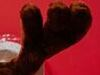
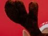
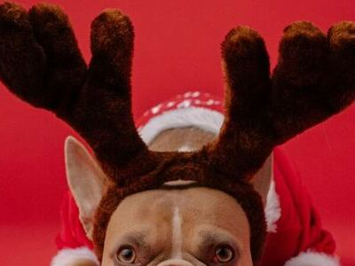

Reindeer Horns




Reindeer Horns Doggy M
¡Presentamos los cuernos de renos para perros, la diadema perfecta para hacer brillar a tu mascota! Estos cuernos adorables están diseñados para que tu perro luzca como un auténtico reno navideño. Confeccionados con materiales suaves y seguros, se ajustan cómodamente a la cabeza de tu perro sin causarle ninguna molestia.
$$$